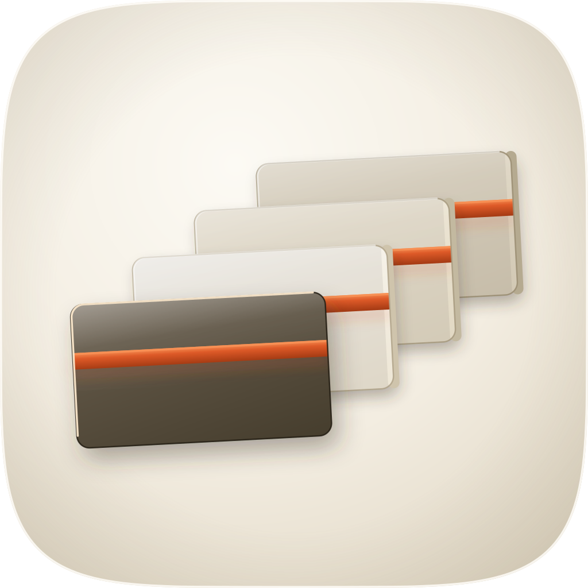
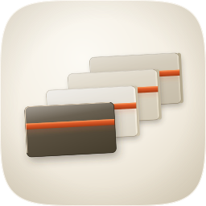
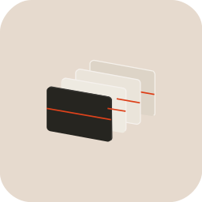
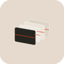
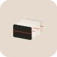
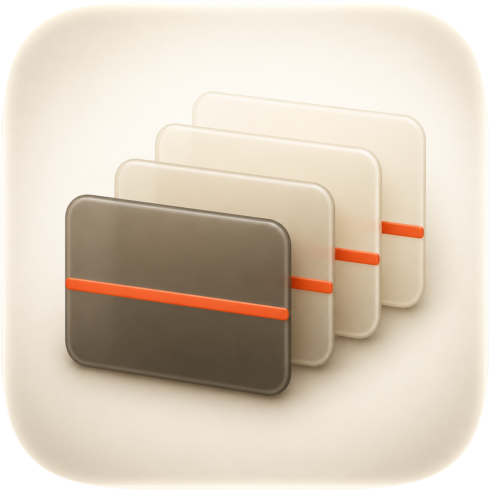
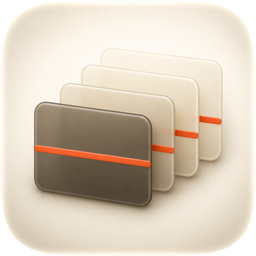
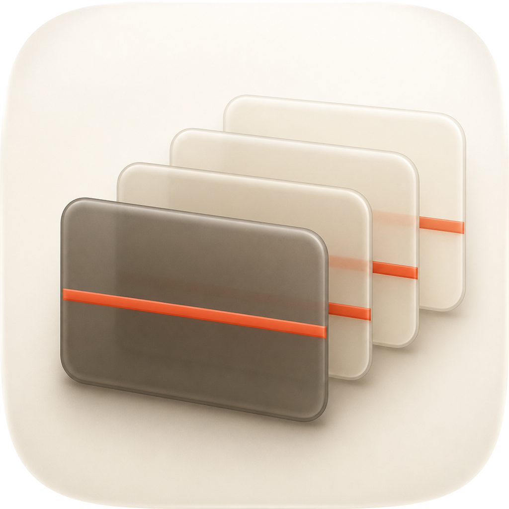
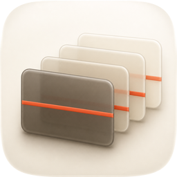

| Take | Hero at 1024, then renders at 128 / 64 / 48 / 32 / 16 css px (2× retina sources), plus the 16px squint magnified | Rubric | Verdict |
|---|---|---|---|
| A · icon.svghand-authored layered SVG (build_icon.py) — SHIPS |
  |
11 / 12 | Four named layers (bg / mid / fg / highlight), 25 paths, 16.8 KB, fidelity.py structure PASS. Checks 1–4 clear on the renders: the family squircle unaltered, one key light at 118°, the filled silhouette names a stepped deck, and 16px RMS luminance contrast measures 0.179 against a family median of 0.152–0.176 (the icon it replaces measured 0.087). Deducted on #7: the deck against its own surround measures 4.41:1, but the three porcelain plates alone measure only 1.18:1 against the cushion and are carried by their seat edges and cast shadows — a weakness shared with report and whats-left. Took C1’s composition reading (recession in depth, air and occlusion between plates, graphite leading slab) and rebuilt it as parameters; kept the 16:9 stage C1 abandoned. |
| B · icon-engineB-arrow-e21b68.svgArrow 1.1 vector take |
   |
5 / 12 | Lost, and on two of the non-negotiables. #1: it bakes its own rounded-corner ground at a radius that is not the family superellipse, so it would ship a different outer shape from every sibling. #4: the title bands are 0.75–1px hairline strokes, which vanish by 32px and leave a dark blob with nothing warm in it. Also flat — no cushion, no rim light, no cast shadow (#5, #8). Nothing salvaged: it drew the plates as outlines rather than volumes, and the glyph occupies barely 45% of the tile. |
| C1 · icon-engineC-9a8f54.pngGPT Image 2, four corpus/sibling references, squircle-masked |
  |
8 / 12 | Won the material and composition read, and is why take A was rebuilt twice. It showed what four flat overlapping congruent rectangles could not: recession in depth, real occlusion, and enough air between plates that the climbing title bands read as a sequence rather than as stripes on one slab. Lost on #10 (a flat pre-masked raster: the layer plan cannot exist in it) and #1 (delivered with opaque square corners — only masking made it shippable at all). It also quietly abandoned the subject: its plates are roughly 4:3, and the fixed 16:9 stage is the one thing deck-craft’s first rule is about. Its ground is a dished tray rather than a cushion. |
| C2 · icon-engineC-aa7201-2.pngGPT Image 2, second take, squircle-masked |
  |
7 / 12 | The weaker of the two rasters and kept for the record. Same #10 and #1 failures as C1, plus a flatter leading plate, a title band that runs to the plate’s own edges so it reads as a stripe wrapping the slab rather than as a title on a face, and less separation between the porcelain plates — at 32px the deck behind collapses into one pale mass. Nothing was taken from it that C1 did not already say better. |
report owns stacked document cards, so the climbing title band is doing all the differentiating work at 16px; (e) the fidelity score ran on the numpy tier with no torch, so the material gap in (b) is measured by luminance, SSIM and edges only and the number is not trustworthy as a material verdict.icon-directions.md (mask discipline, grid, silhouette, 16px identity, single light model, palette discipline, figure-ground, depth coherence, era coherence, variant robustness, personality, no-text) — checks 1–4 non-negotiable, delivery bar ≥10/12. Raster takes audited on their squircle-masked versions per audit-renders/render-manifest.json. Renders produced by audit_sheet.py render (1024 / 256 / 128 / 96 / 64 / 32 sources); verified by its check subcommand. Contrast figures are alpha-masked RMS relative luminance on a 16px downsample, and ring contrasts are region-versus-45px-dilation medians, not hand-placed samples.